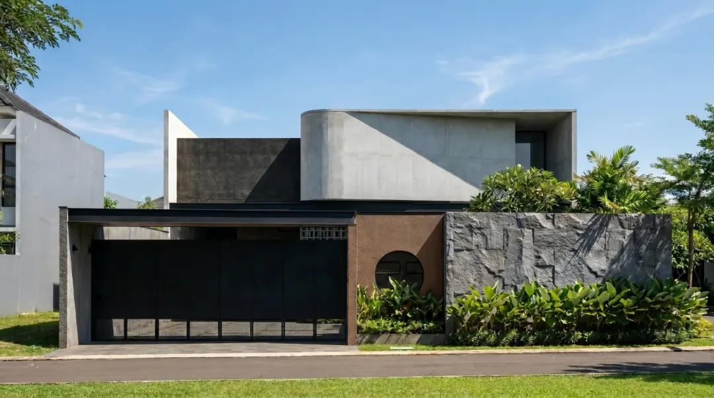
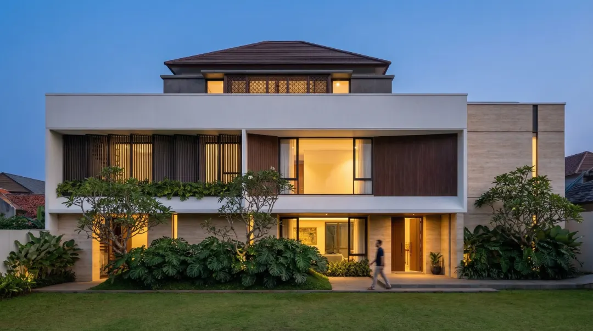

Massa yang Tegas
Volume bangunan dibaca sebagai satu bentuk utuh, dengan bidang melengkung sebagai penanda.
Studi Kasus · Residensial

Ringkasan Proyek
Contoh teks: klien menginginkan rumah tinggal yang kokoh, tenang, dan mudah dirawat. Rancangan ini menjawabnya dengan beton ekspos dan massa bangunan yang tegas, disesuaikan dengan ukuran lahan dan anggaran.
Konsep Desain
Contoh teks: rancangan menyingkirkan elemen yang tidak perlu. Permukaan beton dibiarkan apa adanya, sementara bukaan dan kisi kayu mengatur cahaya yang masuk.
Volume bangunan dibaca sebagai satu bentuk utuh, dengan bidang melengkung sebagai penanda.
Beton, kayu, dan batu dipakai tanpa lapisan tambahan, sehingga teksturnya menjadi bagian dari estetika.
Taman dan kolam di depan rumah menjadi penyeimbang bagi massa beton yang padat.
Arsip Visual





FAQ

Ya. Konsultasi awal gratis lewat WhatsApp. Ceritakan kebutuhan, lahan, dan anggaran Anda, lalu kami bantu menentukan paket yang sesuai.
Bisa. Konsultasi dapat dilakukan lewat WhatsApp, Zoom, atau kunjungan langsung, menyesuaikan kondisi proyek Anda. Kami melayani klien di seluruh Indonesia.
Paket Standard 15 hari kerja, Premium 25 hari kerja, dan Profesional 30 hari kerja. Rinciannya ada di halaman Layanan.
Tergantung paket: 2 kali untuk Standard, 4 kali untuk Premium, dan 8 kali untuk Profesional.
Setelah ruang lingkup pekerjaan dan biaya disepakati, Anda melakukan pembayaran awal untuk memulai proyek. Langkah lengkapnya ada di bagian Proses Pemesanan pada halaman Layanan.